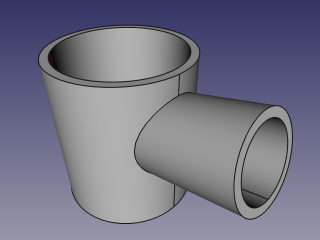

|
| Расположение в меню |
|---|
| Деталь → Join → Connect objects |
| Верстаки |
| Part |
| Быстрые клавиши |
| отсутствуют |
| См. также |
| Connect, Embed, Cutout, Part Booleans, Part Thickness |
Description
Connect tool connects interiors of two walled objects (e.g., pipes). It can also join shells and wires.

How to use
- Select objects to be connected.
The order of selection is not important, since the action of the tool is symmetric. It is enough to select one sub-shape of each object (e.g., faces). You can also select a compound containing all the shapes to be connected, e.g. Draft Array. - Invoke the Part JoinConnect command.
A Connect parametric object is created. Original objects are hidden, and the result of conecting is shown in 3D view.
Properties
Connect
- DATAObjects: List of objects to be connected. Generally, at least two objects are needed, but a single compound containing the shapes to connect will do as well. (as of FreeCAD v0.17.8053, this property is not displayed in property editor, and can only be accessed via Python).
- DATARefine: Sets whether to apply Refine operation or not, to the final shape. The default value is determined by a 'Automatically refine shape after boolean operation' checkbox in PartDesign preferences.
- DATATolerance: "fuzziness" value. This is an extra tolerance to apply when searching for intersections, in addition to tolerances stored in the input shapes.
Example
- Create a pipe by applying thickness to a cylinder:

- Create another, smaller diameter pipe, and place it so that it pierces the wall of the first pipe:

- Select the first pipe and the second pipe, and click the 'Connect objects' option from the Join tools dropdown toolbar button.
 - Use some cross-section tool (Clipping plane, Arch Section Plane, Arch Cut Plane) to reveal internals. On the picture below, Arch Section Plane is used.


{kind=link}
Algorithm
The algorithms behind Join tools are quite simple, and understanding them is important to use the tools correctly. The algorithm of Connect, in particular, is quite a bit more complex than others, but it's generally enough to think of it as a symmetric variant of Embed algorithm
1. Each object is split into pieces by intersections with other objects. (see Part BooleanFragments)
2. From the pieces of an object, only the largest one is kept; all the rest are thrown away.
3. Intersection pieces that touch at least two objects are added to result. Then, the pieces are joined together to form the result of Connect.
Notes
- If at step 1 each object remains in one piece, the result of Connect will be equivalent to union of Objects.
- Now, all compounds supplied are exploded prior to connecting. This means that self-intersecting compounds, which are invalid for all other Boolean operations, are valid for Connect. (This may be changed in the future.)
- The "largest" piece is the one that has largest mass. That is, for solids, volumes are compared; for shells and faces, areas are compared, and so on.
- Since FreeCAD v0.17.8053, and if OCC version is 6.9.0 and above, Connect is almost as fast as all other Boolean operations. For older versions, Connect is approximately 5 times slower than a regular Boolean operation, and works only on solids.
Scripting
The Join tools can by used in macros and from the python console by using the following function:
BOPTools.JoinFeatures.makeConnect(name)
- Creates an empty Connect feature. The 'Objects' property must be assigned explicitly, afterwards.
- Returns the newly created object.
Connect can also be applied to plain shapes, without the need to have a document object, via:
Part.BOPTools.JoinAPI.connect(list_of_shapes, tolerance = 0.0)
This can be useful for making custom Python scripted features.
Example:
import Part j = Part.BOPTools.JoinFeatures.makeConnect(name= 'Connect') j.Objects = FreeCADGui.Selection.getSelection()
The tool itself is implemented in Python, see /Mod/Part/BOPTools/JoinFeatures.py under where FreeCAD is installed.
Version
The tool was introduced in FreeCAD v0.16.5069
The tool was re-implemented to work via generalFuse in FreeCAD v0.17.8053